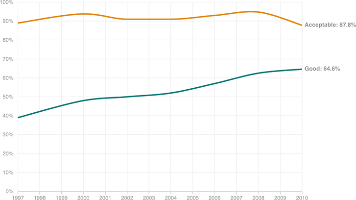

America’s ‘Good’ Roads Keep Getting Better
While the share of miles travelled on roads rated “acceptable” by the Federal Transit Administration has held steady, the share on “good” roads — a subset of “acceptable” — has climbed steadily.
